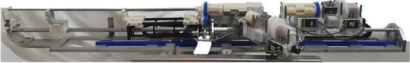

Commercial and clinical-stage systems · hanyang_crr_kim2023
Hanyang CRR
Hanyang/Yonsei master-slave catheter-guidewire driving systems (assembly-type 2016; coaxial controller-responder robot CRR 2023)

1 / 9


- Family
- Commercial and clinical-stage systems (clinical-stage)
- Devices
- 2016: 5 F catheter and 0.035-in guidewire (cha2016_assembly p. 75); CRR: 5 F catheter, 0.035-in guidewire, 2.2 F microcatheter (Progreat) and 0.014-in micro-guidewire (Meister), 4 devices (kim2023_robotassisted p. 1566-1567); how many move simultaneously N.R.
- Degrees of freedom
- 4 (2016: insertion and rotation of catheter and guidewire, cha2016_assembly p. 71); 7 (CRR: insertion and rotation of catheter, guidewire and micro-guidewire, insertion of microcatheter, kim2023_robotassisted p. 1566)
- Push
- Friction rollers
- Twist
- Other
- Tested up to
- Human
- Sim-to-real
- None found — No simulation-trained controller found for this robot.
Testing
- Highest level
- Human
- What was tested
- 2016: bench (10 insertion trials) and phantom (4 users x 3 trials; survey of 8) (cha2016_assembly); 2022: 2 swine as ECMIS advancer (hwang2022_ecmis); kim2023: single-centre prospective pilot, 10 HCC patients, 5 robot-assisted vs 5 conventional TACE, one operator; technical success 4/5 patients and 7/8 target vessels (one failure: 5 F catheter twisted in the telescope); no procedure-related adverse event
- Key numbers
- 2016: max insertion error 0.63 mm, max response time 16 ms (cha2016_assembly). CRR: operator dose median 0.4 vs 53.2 uSv (P = .005); patient dose 2,167.5 vs 2,989.7 uSv (P = .311); procedure time median 56 (47-65) vs 37 (30-58) min (P = .101); 8 of 30 TACE steps robotised (abstract; Results: 8 of 22 procedural steps) (kim2023_robotassisted)
Mechanism
- Push (translation)
- friction-roller (2016 guidewire: active and passive roller, spring-adjusted friction) plus other: rack-and-pinion carriage that moves the catheter drive (cha2016_assembly p. 72); CRR drive type N.R. (kim2023_robotassisted)
- Twist (rotation)
- 2016: plastic gear trains rotate the catheter (Y-connector fixed to the rotation part) and the guidewire roller unit (cha2016_assembly p. 72); CRR N.R.
- Device range
- commercially available devices; 2016 catheter drive stroke 460 mm (cha2016_assembly p. 73); CRR 5 F catheter stroke 45 cm, microcatheter stroke 20 cm longer (kim2023_robotassisted p. 1568-1569)
- Target anatomy
- hepatic arteries for TACE (CRR); arterial phantom (2016)
Sensing and interface
- Force sensing
- Guidewire-tip contact estimated from actuator current, no dedicated sensor: under 200 mA in a straight artery, +300 mA curved, +500 mA blocked (cha2016_assembly p. 76); CRR N.R.
- Leader and haptics
- 2016: 2-DOF parallel-mechanism master (insertion, rotation) with two DC motors for haptic feedback, activate/release and catheter/guidewire mode buttons (cha2016_assembly p. 74); CRR: finger-grip handle with activate/release buttons (kim2023_robotassisted p. 1566), force feedback N.R.
- Imaging
- 2016: camera over a transparent water-filled phantom; CRR: hybrid angio-CT suite (Canon INFX-8000C with Aquilion), robot mounted on the angiotable (kim2023_robotassisted p. 1567, Fig. 2a)
- Sterility
- Device-contacting parts detach and are EtO-sterilised (all but the roller actuator part), assembly 86 s (cha2016_assembly p. 73, 77); the same for the CRR (kim2023_robotassisted citing cha2016)
Size
- Footprint (mm)
- N.R.
- Mass (kg)
- N.R.
Simulation
- Simulation model
- none found
- Sim-trained controller
- none found
Versions
- Lineage
- cha2016_assembly (Proc IMechE H 231(1):69-79, issue 2017, online 2016: assembly-type 4-DOF master-slave, phantom) -> Woo 2019 Appl Sci (5-DOF, haptic) and Song 2021 Appl Sci (in vivo usability), cited by kim2023 refs 14-15, not read -> 2022 its 5-DOF slave used as the guidewire/guide-catheter advancer of DGIST's ECMIS, 2 swine (hwang2022_ecmis p. 8) -> kim2023_robotassisted (JVIR 2023: 7-DOF coaxial controller-responder robot, CRR, human pilot)
Sources
- An assembly-type master–slave catheter and guidewire driving system for vascular intervention · Proceedings of the Institution of Mechanical Engineers, Part H: Journal of Engineering in Medicine, 2016 · doi:10.1177/0954411916679328 [cha2016_assembly]
- Robot-Assisted Transarterial Chemoembolization of Hepatocellular Carcinoma Using a Coaxial Microcatheter Driving Controller-Responder Robot System: Clinical Pilot Study · Journal of Vascular and Interventional Radiology, 2023 · doi:10.1016/j.jvir.2023.06.004 [kim2023_robotassisted]
- An Electromagnetically Controllable Microrobotic Interventional System for Targeted, Real-Time Cardiovascular Intervention · Advanced Healthcare Materials, 2022 · doi:10.1002/adhm.202102529 [hwang2022_ecmis]
Notes
- Notes
- kim2023 cites cha2016 (ref. 13) as a previous description of the CRR system ('described in previous studies (13-15)'); the word predecessor is not used. latest_year 2024 is not supported by cha2016 or kim2023 (kim2023 is 2023). Elsevier/SAGE papers received by hand 2026-11-08. F4 2026-10-14: du2024_analyzing (full) uses the SIAT isomorphic primary-secondary robot and never mentions Hanyang; moved to row siat_haptic_duan2025. | X2 2026-11-08: raised to full text; main picture now the CRR itself (kim2023 Fig. 1a).
This record
- Read level
- full — full (cha2016_assembly, kim2023_robotassisted)
- Picture
- kim2023_robotassisted Fig. 1(a) (photo of the 7-DOF CRR responder robot), J Vasc Interv Radiol 2023;34:1565-1574, p. 4, ↗ — licence: publisher copyright (SIR / Elsevier); grade B
- Picture changes
- native extract (embedded 2073 x 2247, panels a-d); cropped to panel a below the three module labels; the label descenders (rows 165-178, x 215-765) replaced by mirrored backdrop rows 179-192; panel letter "a" (bottom left, on the backdrop) filled with a smoothed Coons patch of its border (no LaMa); none upscaled
- Found by
- academic: Search of academic bedside robots.
- Data
- JSON · YAML:
records/robots/hanyang_crr_kim2023.yaml - Correction
- Suggest a correction [repository not created yet]